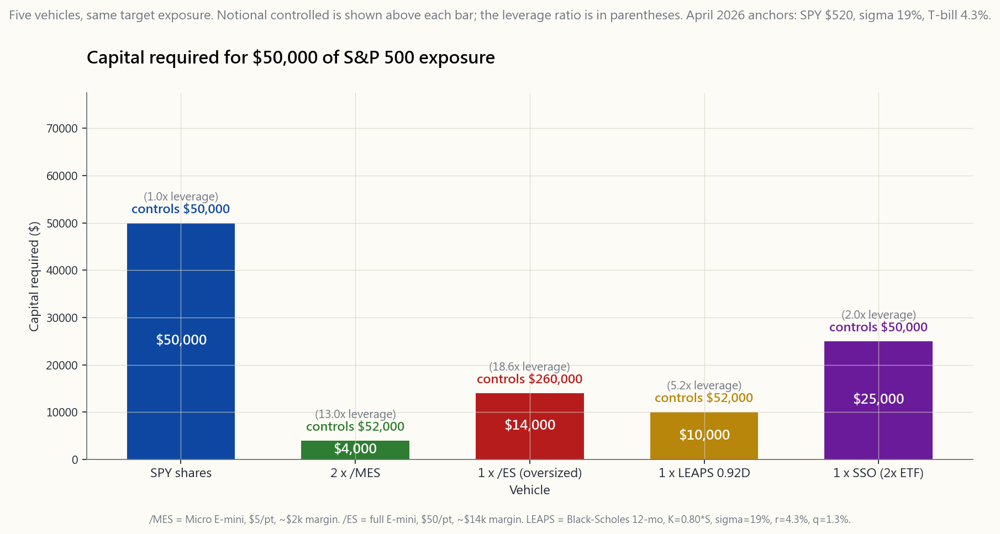
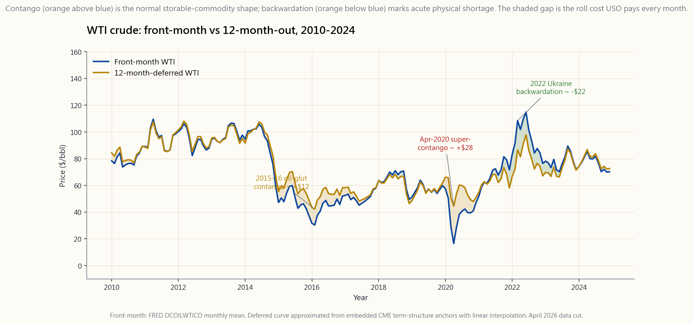

Week 39: Futures — Micro E-mini, /MES, /MNQ, /MCL, Contango, and Section 1256
1. Why This Is Important
Futures are the oldest derivatives in the world. Cotton merchants in 1860s New Orleans, wheat farmers in 1880s Chicago, and Saudi crude desks in 1990s London all priced their goods on the same fundamental contract — I owe you 1,000 barrels (or bushels, or index points) on a fixed date at a fixed price, settled to cash daily. For 130 years that machine was sealed off from retail. The minimum contract size on the S&P 500 e-mini was $250,000 of notional with a $12,000 margin requirement; on crude oil it was 1,000 barrels at a $5,000 margin. You needed a five-figure subaccount to even try one position. Then in 2019 the CME launched the Micro E-mini (MES, 1/10th the size of ES) and the Micro WTI (MCL, 1/10th the size of CL), and what had been an institutional product became a retail one. As of April 2026 a single MES contract has roughly $25,000 of notional exposure and about $2,000 of initial margin. That is the size where it makes sense for a $50-100k brokerage account to consider it.
There are four reasons a Level-3 student needs to learn this lesson now.
This lesson is the operational manual for that fourth use case — and the cautionary tale for the first three regimes (over-leverage, contango drag, and the small-but-real path-dependence risk of daily mark-to-market).
2. What You Need to Know
2.1 What a Futures Contract Actually Is
A futures contract is a standardised, exchange-traded agreement to exchange a fixed quantity of an underlying asset at a fixed price on a fixed future date. Unlike an option, both parties are obligated. Unlike a forward, the contract is standardised and cleared centrally, so counterparty risk runs to the exchange (CME), not to the trader on the other side.
Three concrete examples used throughout this lesson:
- /ES (E-mini S&P 500): $50 per index point. With the S&P 500 at 5,200 in April 2026, one /ES contract has notional $50 × 5,200 = $260,000. Initial margin: about $14,000 (5.4%). Tick size: 0.25 index points = $12.50.
- /MES (Micro E-mini S&P 500): $5 per index point. Notional $26,000. Initial margin: about $2,000 (7.7%). Tick: 0.25 points = $1.25. This is the contract a $50-100k account uses.
- /MNQ (Micro E-mini Nasdaq-100): $2 per index point. With the Nasdaq-100 at 19,000, notional $38,000. Initial margin: about $3,300. Tick: 0.25 points = $0.50.
- /MCL (Micro WTI Crude Oil): 100 barrels per contract. With WTI at $72/bbl, notional $7,200. Initial margin: about $750. Tick: $0.01 = $1.00.
- /MGC (Micro Gold): 10 troy ounces per contract. With gold at $2,400/oz, notional $24,000. Initial margin: about $1,500. Tick: $0.10 = $1.00.
2.2 Notional vs Initial Margin — Why Leverage Is 12-15x by Default
In stocks, when you "buy on margin," your broker lends you cash; the security itself is collateral, and you pay interest on the loan. Futures margin is not a loan. It is a performance bond — a refundable deposit the exchange holds to ensure you can settle the day's loss. The CME sets initial margin (what you must post to open) and maintenance margin (what you must keep above to avoid a call). Brokers can charge slightly more.
![Bar chart comparing the capital required to obtain $50,000 of S&P 500 economic exposure across four vehicles — direct SPY shares, two /MES Micro E-mini contracts, one full /ES E-mini contract (oversized at $260k notional), and a 0.92Δ 12-month SPY LEAPS. SPY shares require the full $50,000 (1.0x leverage). Two /MES require ~$4,000 of posted margin for ~$52,000 of exposure (~12.5x leverage). One /ES is oversized for the target. The LEAPS uses ~$10,000 of premium for ~$52,000 of exposure (~5x). The orange overlay on each non-share bar shows the freed cash that earns risk-free T-bill yield. The chart is the visual proof that futures are the highest-leverage, lowest-capital path to S&P exposure.](image/week39_micro_compare.png)
The chart above asks one question: what is the cheapest way to control $50,000 of S&P 500 economic exposure?
- SPY shares: $50,000. 1.0x leverage. Direct cost.
- One MES contract: notional $26,000 × ~2 contracts ≈ $50,000 exposure for ~$4,000 of margin. ~12.5x leverage.
- One ES contract: $260,000 of notional, oversized for a $50k target — uses ~$14,000 of margin to control 5x the exposure. The wrong tool below $200k of intended position size; you cannot dial in finely.
- One LEAPS at 0.92Δ on SPY (week 37): ~$10,000 of premium for $52,000 of exposure. ~5x leverage.
The cost: mark-to-market. Every trading day at 4 p.m. CT, the exchange computes your gain or loss and sweeps it from your account in cash, even if you have not closed. If MES drops 100 points overnight (a 2% move) on a 2-contract position, your account loses $1,000 by the next morning's open. With a $4,000 margin balance that is a 25% drawdown of the posted collateral; if the move is 200 points you receive a margin call before lunch. Leverage works in both directions, and the daily settlement is real cash — not a paper number.
2.3 The Futures Curve: Contango and Backwardation
The price of the December crude contract is rarely the same as the price of the October contract, even when both reference the same barrel of West Texas Intermediate. The shape of that term structure is the most important thing a commodity-futures investor watches.
![Two-line chart of WTI crude prices ~2010 through 2024: a blue line for the front-month CL contract (essentially spot oil) and an orange line for the 12-months-out deferred contract, with the area between them shaded as the contango/backwardation spread. When orange sits above blue (most of the period) the curve is in contango — the shaded area is positive and is the per-month roll cost USO eats. The April 2020 super-contango spike — when storage at Cushing ran out and front-month CL settled at -$37 while December-2020 traded near $30 — appears as a vertical blowout of the spread. The 2022 Russia–Ukraine episode shows orange briefly diving below blue (deep backwardation, +$30+ spot premium). The chart is the mechanical explanation for why USO compounded at -8%/yr through 2009-2020 while spot WTI was roughly flat.](image/week39_contango_uso.png)
- Contango: back-month price > front-month price > spot. The market is paying you to delay delivery. This is the "normal" shape for storable commodities — the back-month price has to compensate the seller for storage cost, financing cost, and the lost opportunity of selling spot today. Crude oil is in contango about 60-70% of the time historically. The chart above shows the canonical 2015-2016 oil-glut episode and the 2020 super-contango — back-month minus front-month spread blew out to $30/bbl in April 2020 when storage at Cushing OK ran out and the front-month CL contract famously settled at negative $37 at expiration.
- Backwardation: spot > front-month > back-month. The market is paying you to take delivery now. This happens when there is an immediate physical shortage — the convenience yield of holding the actual barrel in your tank exceeds the cost of carry. Crude was deeply backwardated in 2022 when Russia invaded Ukraine and prompt-month physical traded $20+ above the 12-month contract.
The fix, if you actually want crude exposure: hold the December-2027 contract (or even further out), not the front month. The deferred contract has a flatter roll. Better yet, hold it in the futures account itself — no ETF wrapper, no expense ratio, and the §1256 tax treatment instead of the K-1 partnership tax form USO ships out every year.
2.4 Section 1256: The 60/40 Rule
This is the tax-efficient-leverage capstone. Almost all retail-tradeable index futures (/ES, /MES, /NQ, /MNQ, /YM, /RTY, /CL, /MCL, /GC, /MGC) and a narrow set of broad-based index options (SPX, RUT, NDX) are classified under Section 1256 of the Internal Revenue Code. The treatment is unique and entirely favourable:
For a worked example: a $20,000 gain in /MES held over six months. Under §1256, $12,000 is taxed at LTCG (15-20%) and $8,000 at ordinary (32-37%). Total tax at 32% bracket: $12,000 × 15% + $8,000 × 32% = $1,800 + $2,560 = $4,360, an effective rate of 21.8%. The same $20,000 gain on SPY held six months would be all short-term at 32% = $6,400. Difference: $2,040, or 10.2% of the gain itself. Over a career of active trading that compounds into real money, and it is the single biggest reason desks that trade index exposure structurally do it through futures rather than through ETFs.
2.5 Roll Mechanics
Futures expire. The active /MES contract rolls quarterly: March, June, September, December (the "front month" letters H, M, U, Z respectively). About a week before expiration, liquidity migrates from the expiring contract to the next quarterly. The roll itself is mechanical: sell the expiring contract, buy the next quarterly, in a single calendar-spread order that pays the (usually small, for index futures) basis differential.
For equity-index futures the roll cost is structurally tiny — typically 5-15 basis points per quarter (driven by the cost-of-carry: short-rate minus dividend yield × 0.25). On /MES at 5,200, that is 2-8 index points. For an investor holding /MES as portable beta exposure, the all-in annual roll friction is roughly 0.20-0.60% per year — far cheaper than the LEAPS extrinsic (~2-3%/yr) or the SSO drag (~3-4%/yr).
For commodities, roll cost depends entirely on curve shape. In contango, every roll is a loss (you saw this above for USO). In backwardation, every roll is a gain — which is exactly why commodity hedge funds prefer to be long oil only when the curve is backwardated. The signal is observable on the screen; you do not have to forecast it.
2.6 /MES vs SPY for Portable Equity Exposure
A practical comparison for a $100,000 account that wants $30,000 of S&P 500 beta as part of its L2 strategy sleeve.
| Vehicle | Capital used | Tax on 1-year +20% gain | Annual carry cost |
|---|---|---|---|
| 30 SPY shares × $520 | $15,600 (need $30k) | LTCG 15% on $6,000 = $900 | None (small div) |
| 1 /MES at 5,200 | ~$2,000 margin (controls $26k) | §1256 21.8% on $5,200 = $1,134 | Roll ~0.30% × $26k = $78 |
| 1 LEAPS 0.92Δ SPY | ~$5,000 premium (controls $30k) | LTCG 15% on $6,000 = $900 | Extrinsic ~2.5% × $30k = $750 |
For one-year hold periods, all three are within ~$300 of each other on after-tax-and-cost return. For under-one-year hold periods, /MES dominates: §1256 is the only one of the three that does not pay short-term capital gains rates. This is why active rotation across the L2 sleeve uses /MES and not SPY — you are making 6-8 round trips a year and the tax math is different by 10 percentage points each one.
The honest caveat: /MES requires a Tier 2 futures-cleared brokerage account (CME-approved broker, separate margin paperwork, $5-25k minimum at most retail brokers), an understanding of the 24-hour session (most volume is during the 9:30 a.m.-4:00 p.m. ET overlap with cash equities; off-hours liquidity gets thin and slippage gets ugly), and the discipline to not over-size. The leverage is 12-15x by default. If you treat a 2-contract /MES position the way you treat a 10-share SPY position, you will lose your account on a normal Tuesday.
Try the Futures Lab to see how product, contract count, account size, and a single monthly move shape your notional exposure, margin used, gross P&L, leverage ratio, and after-tax 60/40 P&L. The §1256 box is the lever that matters most over a career of active trading.
3. Common Misconceptions
4. Q&A Section
Q1. How much account size do I need to trade /MES? Most brokers (TastyTrade, IBKR, Schwab Futures) require $2,000-5,000 minimum to enable futures trading and clear ~$2,000 initial margin per /MES contract. Practical floor is roughly $25,000 — that gives you room for 2-3 contracts plus the discipline buffer to absorb a 10% drawdown without margin call.
Q2. What's the daily mark-to-market mean for my taxes? On the brokerage statement you see daily P&L sweeps. For tax purposes, only year-end positions are mark-to-market under §1256 (Form 6781). Closed trades are realised normally. The two reports reconcile.
Q3. Can I trade futures in a Roth IRA? Yes — TastyTrade, IBKR, Schwab all offer futures-cleared IRAs. There is no margin call risk in an IRA the way there is in a regular margin account, but you cannot replenish a margin shortfall mid-day, so brokers typically require 1.5-2x normal margin in IRAs. The §1256 tax benefit is moot in an IRA (no tax on anything), but the leverage and execution are still useful.
Q4. What's the difference between /MES and SPX (the index option)? SPX is a European-style cash-settled index option, also taxed under §1256. /MES is the futures contract. SPX is for option-strategy exposure (spreads, condors); /MES is for delta-1 directional exposure. Both are 60/40 taxed.
Q5. How often should I roll /MES? On the Thursday before the third Friday of expiration month — that is when liquidity has migrated to the next quarterly contract. Your broker will warn you a week in advance. Do not let it expire; the cash settlement to the index print will lock in whatever the open print happens to be.
Q6. What happens if I get a margin call on /MES? The broker will liquidate enough of your position to bring you back above maintenance margin, often the same day, often without warning. Futures margin calls are not the 30-day "send a check" calls of the equities world. Maintain at least 1.5x initial margin in your account and you will essentially never see one.
Q7. Why is contango worse for some commodities than others? Storage cost dominates. Crude (storable, but expensive to store offshore) is moderately contangoed. Natural gas (very expensive to store, seasonal demand) is severely contangoed in summer. Metals (cheap to store) are mildly contangoed. Live cattle (impossible to store cheaply) is often backwardated. The cost-of-carry formula tells you the magnitude.
Q8. Can I express a "long volatility" view through /MES? No — /MES is delta-1 on the index. For long-vol exposure you need /VX (VIX futures) or VIX options. /VX has its own contango problem (futures price > spot VIX about 80% of the time), which is why VXX bleeds 30-60%/year in normal markets.
Q9. How does this fit with the four-tranche framework? /MES is a portable-beta lever for the L1 sleeve: when the 60/40 portfolio is at 55% equity and you want 65% for a quarter, post $4-6k of margin and add 2 /MES contracts. Cheaper than rebalancing into SPY (taxes), faster than waiting for the next contribution.
Q10. What's a reasonable position size in /MES? A useful rule: size such that a 5% adverse move in the underlying index does not exceed 10% of your liquid net worth. For a $100k account that means roughly 4 /MES contracts max ($104k notional), and most active retail traders I respect run 1-2.
Q11. Why does Horace mention tax treatment specifically here? Because §1256 60/40 is the cleanest tax treatment any retail US investor can get on directional speculation. You do not have to hold for a year. You do not have to harvest losses. You do not have to navigate wash-sale rules. The 21.8% blended rate at the 32% bracket is a structural gift from the 1981 tax code, and it has not been touched since — it is the single most under-appreciated thing in the US retail tax code.
Q12. When does this strategy fail? Three regimes. (1) Over-leverage: sizing /MES based on margin posted instead of notional controlled — the classic blow-up. (2) Holding commodity futures long-term in contango: /MCL or /MNG decay through roll just like USO/UNG. (3) Off-hours trading on news: spreads widen 5x+ at 3 a.m. ET; the slippage on a 50-point /MES move during off-hours can exceed the move itself.
第39週：期貨——微型E-mini、/MES、/MNQ、/MCL、期貨升水及第1256條
1. 為何此課題至關重要
期貨是全球歷史最悠久的衍生工具。1860年代新奧爾良的棉花商、1880年代芝加哥的小麥農、1990年代倫敦的沙特原油交易台，皆以同一基本合約為貨品定價——我承諾在某個固定日期、以固定價格交付1,000桶（或蒲式耳、或指數點），並按日以現金結算。這套機制封閉於散戶市場長達130年。標普500 E-mini合約的最低合約規模為250,000美元名義值，保證金要求12,000美元；原油為1,000桶，保證金5,000美元。即便只開一個倉位，你也需要五位數的子帳戶。直至2019年，芝商所推出了微型E-mini（MES，相當於ES的十分之一）和微型WTI（MCL，相當於CL的十分之一），原本屬機構的產品由此向散戶開放。截至2026年4月，單張MES合約的名義值約為25,000美元，初始保證金約為2,000美元。對於資金規模在5萬至10萬美元的經紀帳戶而言，這正是值得考慮的入場規模。
作為第三級別的學員，你現在需要學習本課題，原因有四。
本課為第四個應用場景提供操作指引，同時亦是前三個情境（過度槓桿、期貨升水拖累，以及每日按市價計算的路徑依賴風險）的警示故事。
2. 你需要掌握的知識
2.1 期貨合約的本質
期貨合約是一種標準化、在交易所買賣的協議，雙方同意在未來某固定日期，以固定價格交換固定數量的標的資產。與期權不同，雙方均有義務履約。與遠期合約不同，期貨合約是標準化且集中清算的，因此對手方風險由交易所（芝商所）承擔，而非交易對手方。
本課全程使用的三個具體例子如下：
- /ES（E-mini標普500）： 每個指數點50美元。以2026年4月標普500指數報5,200計，一張/ES合約的名義值為50 × 5,200 = 260,000美元。初始保證金：約14,000美元（5.4%）。最小變動單位：0.25個指數點 = 12.50美元。
- /MES（微型E-mini標普500）： 每個指數點5美元。名義值26,000美元。初始保證金：約2,000美元（7.7%）。最小變動單位：0.25點 = 1.25美元。這是5萬至10萬美元帳戶適用的合約。
- /MNQ（微型E-mini納斯達克100）： 每個指數點2美元。以納斯達克100指數報19,000計，名義值38,000美元。初始保證金：約3,300美元。最小變動單位：0.25點 = 0.50美元。
- /MCL（微型WTI原油）： 每張合約100桶。以WTI油價每桶72美元計，名義值7,200美元。初始保證金：約750美元。最小變動單位：0.01美元 = 1.00美元。
- /MGC（微型黃金）： 每張合約10金衡制盎司。以黃金報每盎司2,400美元計，名義值24,000美元。初始保證金：約1,500美元。最小變動單位：0.10美元 = 1.00美元。
2.2 名義值與初始保證金——為何槓桿預設為12至15倍
在股票交易中，「孖展買入」是指你的經紀商向你借出現金，以證券本身作為抵押，你須就借款支付利息。期貨保證金並非借貸。 它是一種履約保證金——由交易所持有的可退還按金，確保你能結算當日的虧損。芝商所設定初始保證金（開倉所需金額）和維持保證金（避免追繳保證金的最低金額）。各經紀商可酌情收取略高的金額。

上圖只問一個問題：取得50,000美元標普500經濟敞口，最低成本的方式是什麼？
- SPY股份： 50,000美元。1.0倍槓桿。直接成本。
- 一張MES合約： 名義值26,000美元 × 約2張合約 ≈ 50,000美元敞口，僅需約4,000美元保證金。約12.5倍槓桿。
- 一張ES合約： 名義值260,000美元，對5萬美元目標而言規模過大——須使用約14,000美元保證金控制5倍的敞口。對於200,000美元以下的目標倉位規模，這是錯誤的工具；你無法精細調整，因為合約單位是整數張。
- 一張0.92Δ SPY長期期權（第37週）： 約10,000美元期權金取得52,000美元敞口。約5倍槓桿。
代價在於：每日按市值計算。 每個交易日下午4點（中部時間），交易所結算你的盈虧並以現金劃撥，即使你尚未平倉。若MES一夜間下跌100點（2%的波幅），兩張合約的帳戶翌日開市前就會損失1,000美元。以4,000美元保證金計算，這相當於所繳抵押品的25%回撤；若跌幅為200點，午前便會收到追繳保證金通知。槓桿雙向生效，每日結算是真實的現金劃撥，而非帳面數字。
2.3 期貨曲線：升水與貼水
即使同樣以西德克薩斯中質原油為標的，12月原油合約的價格鮮少與10月合約相同。這種期限結構的形態，是商品期貨投資者最需要關注的事項。

- 升水（Contango）： 遠月價格 > 近月價格 > 現貨。市場願意為延遲交割付費。這是可儲存商品的「正常」曲線形態——遠月價格必須補償賣方的倉儲成本、融資成本，以及放棄今日現貨銷售的機會成本。原油歷史上約有60至70%的時間處於升水狀態。上圖呈現了2015至2016年供油過剩的典型案例，以及2020年的超級升水——2020年4月，美國俄克拉荷馬州庫欣倉儲用盡後，遠月對近月的差價擴大至每桶30美元，近月CL合約更以負37美元的歷史性價格到期結算。
- 貼水（Backwardation）： 現貨 > 近月 > 遠月。市場願意為立即交割付費。這種情況發生在實物即時短缺時——持有實際桶裝原油的便利收益率超過持倉成本。2022年俄羅斯入侵烏克蘭後，原油深度貼水，近月實物油價較12個月合約高出逾20美元。
解決方法（若你確實需要原油敞口）：持有2027年12月合約（或更遠期），而非近月合約。遠期合約的移倉曲線更為平坦。更好的做法是直接在期貨帳戶持有——無基金包裝、無開支比率，且適用第1256條稅務待遇，而非USO每年派發的K-1合夥人稅表。
2.4 第1256條：60/40規則
這是稅務效益槓桿的總結。幾乎所有散戶可交易的指數期貨（/ES、/MES、/NQ、/MNQ、/YM、/RTY、/CL、/MCL、/GC、/MGC）及一小批廣基指數期權（SPX、RUT、NDX），均依據美國《國內稅收法典》第1256條分類。其稅務待遇獨特且全面有利：
以一個實例說明：持有/MES六個月，獲利20,000美元。依第1256條，12,000美元按長期資本增值稅率（15至20%）課稅，8,000美元按普通稅率（32至37%）課稅。以32%稅階計算：12,000美元 × 15% + 8,000美元 × 32% = 1,800美元 + 2,560美元 = 4,360美元，實際稅率21.8%。同樣20,000美元的SPY收益持有六個月，全部以32%短期課稅 = 6,400美元。差額：2,040美元，即收益本身的10.2%。 在整個主動交易生涯中，這複利效果將累積為真實財富，也是交易指數敞口的機構，從結構上傾向以期貨而非交易所買賣基金操作的首要原因。
2.5 移倉機制
期貨有到期日。活躍的/MES合約按季度移倉：3月、6月、9月、12月（「近月」代號分別為H、M、U、Z）。在到期日前約一週，流動性會轉移至下一季度合約。移倉本身為機械操作：賣出即將到期的合約，買入下一季度合約，以單一日曆價差盤執行，並支付（對於指數期貨通常很小的）基差差額。
對於股票指數期貨，移倉成本在結構上極小——通常每季約5至15個基點（由持倉成本驅動：短期利率減去股息收益率 × 0.25）。對於指數報5,200的/MES而言，約為2至8個指數點。對於以/MES作為可攜式貝塔敞口的投資者，年化移倉成本約為0.20至0.60%——遠低於長期期權的外在值衰減（每年約2至3%）或SSO的拖累（每年約3至4%）。
對於商品期貨，移倉成本完全取決於曲線形態。在升水狀態下，每次移倉均為虧損（如上文USO案例所示）。在貼水狀態下，每次移倉均為收益——這正是商品對沖基金只在曲線貼水時才選擇做多原油的原因。這個信號在螢幕上清晰可見；無需預測，一眼便知。
2.6 /MES與SPY的可攜式股票敞口比較
以下是一個100,000美元帳戶的實際比較，帳戶希望在其L2策略層中持有30,000美元的標普500貝塔敞口。
| 工具 | 使用資本 | 1年 +20%收益的稅務 | 年化持倉成本 |
|---|---|---|---|
| 30股SPY × $520 | $15,600（需$30,000） | 長期資本增值稅15%，$6,000收益 = $900 | 無（少量股息） |
| 1張/MES，指數5,200 | 約$2,000保證金（掌控$26,000） | §1256條 21.8%，$5,200收益 = $1,134 | 移倉約0.30% × $26,000 = $78 |
| 1張0.92Δ SPY長期期權 | 約$5,000期權金（掌控$30,000） | 長期資本增值稅15%，$6,000收益 = $900 | 外在值約2.5% × $30,000 = $750 |
持倉一年，三者的稅後及成本後回報相差不超過約300美元。但在不足一年的持倉期內，/MES佔優：第1256條是三者中唯一不按短期資本增值稅率徵稅的工具。這正是L2層的主動輪動使用/MES而非SPY的原因——每年進行6至8次來回操作，每次的稅務差異高達10個百分點。
坦誠的注意事項：/MES需要開立第二級別的期貨清算經紀帳戶（經芝商所核准的經紀商、獨立保證金文件，大多數散戶經紀商最低要求5,000至25,000美元），需了解24小時交易時段（大部分成交量集中在美東時間上午9:30至下午4:00與現貨股票市場重疊期間；非交易時段流動性下降，滑點加劇），以及切勿過度倉位的自律。預設槓桿為12至15倍。若你以對待10股SPY的方式操作2張/MES合約，一個平常的星期二便足以令你帳戶爆倉。
請試用期貨實驗室，了解產品類別、合約數量、帳戶規模及單月預期波幅，如何影響你的名義敞口、保證金使用量、毛利盈虧、槓桿比率及60/40稅後盈虧。§1256條的核取框，是整個主動交易生涯中最關鍵的槓桿。
3. 常見誤解
4. 問答環節
問題1：交易/MES需要多少帳戶資金？ 大多數經紀商（TastyTrade、盈透證券、嘉信理財期貨）要求2,000至5,000美元的最低存款以開通期貨交易，並清算每張/MES合約約2,000美元的初始保證金。實際起步資金約為25,000美元——這樣你才有足夠的空間持有2至3張合約，並在不觸發追繳保證金的情況下，承受10%回撤的緩衝。
問題2：每日按市值計算對我的稅務有何影響？ 在經紀商結單中，你可看到每日盈虧劃撥。就稅務而言，根據§1256條，只有年底的未平倉倉位才按市值計算（申報於6781表格）。已平倉交易按一般方式作為已實現收益申報。兩份報表可相互核對。
問題3：我可以在羅斯個人退休帳戶中交易期貨嗎？ 可以——TastyTrade、盈透證券和嘉信理財均提供開通期貨的個人退休帳戶。在個人退休帳戶中，追繳保證金的風險與普通保證金帳戶有所不同，因為你無法在日內補充保證金差額，所以大多數經紀商在個人退休帳戶中通常要求1.5至2倍的正常保證金。§1256條的稅務優惠在個人退休帳戶中無意義（帳戶內任何收益均毋須繳稅），但槓桿和執行效率仍具實用價值。
問題4：/MES與SPX指數期權有何分別？ SPX是歐式現金結算指數期權，同樣適用§1256條課稅。/MES是期貨合約。SPX用於期權策略敞口（價差、鐵鷹式策略等）；/MES用於Delta-1的方向性敞口。兩者均適用60/40課稅。
問題5：我應該多久移倉一次/MES？ 在到期月份第三個星期五前的星期四——此時流動性已轉移至下一季度合約。你的經紀商會在一週前發出提醒。切勿讓合約到期；到期時的現金結算將鎖定該時刻的開市報價。
問題6：若/MES收到追繳保證金通知，會發生什麼事？ 經紀商會清算足夠的倉位，使你的帳戶回到維持保證金水平以上，通常在當天執行，且往往不事先通知。期貨的追繳保證金不像股票世界中那種「30天內補交支票」的寬限期。在帳戶中保持至少1.5倍初始保證金，基本上便不會遇到追繳保證金的情況。
問題7：為何升水對某些商品的影響比其他商品更嚴重？ 倉儲成本是主因。原油（可儲存，但海外倉儲成本較高）的升水程度屬中等。天然氣（倉儲成本極高，需求具季節性）在夏季升水嚴重。金屬（倉儲成本低）的升水程度輕微。活牛（幾乎無法廉價儲存）則往往處於貼水狀態。持倉成本公式可計算出其幅度。
問題8：我可以透過/MES表達「做多波動性」的觀點嗎？ 不可以——/MES是指數的Delta-1工具。做多波動性敞口需要/VX（VIX期貨）或波動率指數期權。/VX同樣存在升水問題（約80%的時間，期貨價格高於波動率指數現貨），這正是VXX在正常市場環境下每年損耗30至60%的原因。
問題9：這與四層架構如何配合？ /MES是L1層的可攜式貝塔槓桿：當60/40投資組合的股票比例在55%、而你希望某一季度達至65%時，繳納4,000至6,000美元保證金，增加2張/MES合約。這比再平衡買入SPY（需繳稅）更划算，也比等待下次入金更迅速。
問題10：/MES的合理倉位規模是多少？ 一個實用法則：倉位規模以標的指數下跌5%不超過你流動淨資產10%為準。對於100,000美元帳戶，約為最多4張/MES合約（約104,000美元名義值），而我尊重的大多數主動散戶投資者通常持有1至2張。
問題11：為何陳馬特別在此提及稅務待遇？ 因為§1256條的60/40是任何美國散戶投資者在方向性投機中所能獲得的最優惠稅務待遇。你無需持倉一年。你無需進行稅務虧損收割。你無需應對洗售規則。在32%稅階下，21.8%的混合稅率是1981年稅法賦予的結構性禮遇，至今從未更改——它是美國散戶稅法中最被低估的一項，沒有之一。
問題12：這個策略在什麼情況下會失效？ 三個情境。（1）過度槓桿： 按所繳保證金（而非所控名義值）調整倉位規模——這是典型的爆倉模式。（2）在升水狀態下長期持有商品期貨： /MCL或/MNG在升水時會像USO/UNG一樣因移倉而損耗。（3）在消息發佈後的非交易時段交易： 美東時間凌晨3點的差價擴大5倍以上；非交易時段/MES 50點波動的滑點，可能超過波動幅度本身。
第39週：期貨 — 微型E-mini、/MES、/MNQ、/MCL、正價差，以及第1256條
1. 為什麼這很重要
期貨是世界上歷史最悠久的衍生性商品。1860年代紐奧良的棉花商人、1880年代芝加哥的小麥農夫、以及1990年代倫敦的沙烏地阿拉伯原油交易部門，全都在同一個基本合約上為商品定價——我欠你1,000桶（或英斗、或指數點），在固定日期以固定價格交割，每日現金結算。在這130年間，這套機制對散戶完全封閉。S&P 500 E-mini的最小合約規模為25萬美元名目價值，保證金要求1.2萬美元；原油則是1,000桶，保證金5,000美元。你至少需要五位數的子帳戶才能嘗試一口部位。直到2019年，CME推出了微型E-mini（MES，ES的十分之一大小）和微型WTI（MCL，CL的十分之一大小），原本屬於機構的產品才正式成為散戶可用的工具。截至2026年4月，單口MES合約的名目曝險約為25,000美元，初始保證金約2,000美元。這樣的規模，對於5萬至10萬美元的券商帳戶而言，是值得認真考慮的。
Level-3學員現在需要學習這堂課，有四個原因。
這堂課是第四種應用情境的操作手冊——同時也是前三種使用情境（過度槓桿、正價差拖累，以及每日按市值計算的小但真實的路徑依賴風險）的警示故事。
2. 你需要知道的事
2.1 期貨合約的本質
期貨合約是一種標準化、在交易所掛牌交易的協議，約定雙方在未來固定日期，以固定價格交換固定數量的標的資產。與選擇權不同，雙方均有履約義務。與遠期合約不同，期貨合約已標準化且由交易所集中清算，因此對手方風險由交易所（CME）承擔，而非交易對手。
本課程全程使用以下三個具體範例：
- /ES（E-mini S&P 500）： 每指數點50美元。2026年4月S&P 500位於5,200點，一口/ES合約的名目價值為50 × 5,200 = 260,000美元。初始保證金：約14,000美元（5.4%）。最小跳動位：0.25指數點 = 12.50美元。
- /MES（微型E-mini S&P 500）： 每指數點5美元。名目價值26,000美元。初始保證金：約2,000美元（7.7%）。最小跳動位：0.25點 = 1.25美元。這是5至10萬美元帳戶適用的合約。
- /MNQ（微型E-mini Nasdaq-100）： 每指數點2美元。Nasdaq-100位於19,000點時，名目價值38,000美元。初始保證金：約3,300美元。最小跳動位：0.25點 = 0.50美元。
- /MCL（微型WTI原油）： 每口合約100桶。WTI位於72美元/桶時，名目價值7,200美元。初始保證金：約750美元。最小跳動位：0.01美元 = 1.00美元。
- /MGC（微型黃金）： 每口合約10金衡盎司。黃金位於2,400美元/盎司時，名目價值24,000美元。初始保證金：約1,500美元。最小跳動位：0.10美元 = 1.00美元。
2.2 名目價值與初始保證金——為何槓桿預設為12至15倍
在股票投資中，「融資買進」意味著券商借給你現金，以有價證券本身作為擔保品，你須支付貸款利息。期貨保證金並非借貸。 它是一種履約保證金——交易所持有的可退還押金，用以確保你能結算當日虧損。CME設定初始保證金（開倉所需繳交金額）和維持保證金（避免追繳保證金的最低水位）。券商可能收取略高的金額。
上方圖表只問了一個問題：取得50,000美元S&P 500經濟曝險，最便宜的方式是什麼？
- SPY股票： 50,000美元。1.0倍槓桿。全額成本。
- 一口MES合約： 名目價值26,000美元 × 約2口 ≈ 50,000美元曝險，只需約4,000美元保證金。約12.5倍槓桿。
- 一口ES合約： 名目價值260,000美元，對50,000美元目標而言規模過大——需約14,000美元保證金來控制5倍曝險。對低於20萬美元目標部位規模而言是錯誤工具；你無法精細調整，因為最小單位是一口合約，而一口太大。
- 一口0.92Δ SPY長期期權（第37週）： 約10,000美元權利金取得52,000美元曝險。約5倍槓桿。
代價是：每日按市值計算。 每個交易日下午4時（中部時間），交易所計算你的盈虧並從你的帳戶中現金劃撥，即使你尚未平倉。如果MES隔夜下跌100點（2%的波動），你的帳戶在次日開盤前就損失1,000美元。以4,000美元保證金計算，這是已繳保證金的25%回撤；如果跌幅達200點，你將在午前收到追繳保證金通知。槓桿是雙向的，每日結算是真實的現金——不是紙面數字。
2.3 期貨曲線：正價差與逆價差
12月原油合約的價格，幾乎不會與10月合約的價格相同，即使兩者都指涉同一桶西德克薩斯中質原油。這條期限結構的形狀，是原物料期貨投資人最重要的觀察指標。
- 正價差： 遠月價格 > 近月價格 > 現貨。市場正在為你延遲交割提供補償。這是可儲存商品的「正常」曲線形狀——遠月價格必須補償賣方的倉儲成本、融資成本，以及放棄今天以現貨出售的機會成本。歷史上，原油約有60至70%的時間處於正價差。上方圖表顯示了2015至2016年油市供給過剩的典型案例，以及2020年超級正價差——當奧克拉荷馬州庫欣的儲油設施滿載，近月CL合約在到期時以負37美元的歷史性低價結算，遠月與近月的利差一度擴大至30美元/桶。
- 逆價差： 現貨 > 近月 > 遠月。市場正在為你立即提貨提供補償。這發生在有即時實物短缺的情況下——持有實際油桶的便利收益超過了持有成本。2022年俄羅斯入侵烏克蘭時，原油出現深度逆價差，即期月實物交易溢價超過12個月合約20美元以上。
解決方法，如果你真的想要原油曝險：持有2027年12月合約（或更遠月份），而非近月合約。遠月合約的滾動更平滑。更好的方式是直接在期貨帳戶中持有——沒有指數股票型基金包裝、沒有費用率，而且享有第1256條的稅務待遇，而非USO每年寄送的K-1合夥稅務表格。
2.4 第1256條：60/40規則
這是稅務效率槓桿的壓軸。幾乎所有散戶可交易的指數期貨（/ES、/MES、/NQ、/MNQ、/YM、/RTY、/CL、/MCL、/GC、/MGC）以及少數廣泛性指數選擇權（SPX、RUT、NDX），均依美國《國內稅收法典》第1256條分類。其待遇獨特且全面有利：
一個實例：持有/MES六個月，獲利20,000美元。依第1256條，12,000美元按長期資本利得稅率（15至20%）課稅，8,000美元按一般所得稅率（32至37%）課稅。在32%稅率級距下，總稅額為：12,000 × 15% + 8,000 × 32% = 1,800 + 2,560 = 4,360美元，有效稅率21.8%。同樣20,000美元的SPY獲利，持有六個月屬全數短期獲利，稅率32% = 6,400美元。差額：2,040美元，即獲利本身的10.2%。 在一個主動交易的職業生涯中，這種差距會複利累積成真實的財富，這也是為何在指數曝險上，機構交易部門在結構上選擇透過期貨而非指數股票型基金操作的最主要原因。
2.5 滾動機制
期貨有到期日。活躍的/MES合約每季滾動：3月、6月、9月、12月（近月合約月份代碼分別為H、M、U、Z）。在到期前約一週，流動性從即將到期的合約遷移到下一個季度合約。滾動本身是機械式操作：賣出到期合約，買進下一個季度合約，以單一日曆價差委託完成，支付（對指數期貨而言通常很小的）基差差額。
股票指數期貨的滾動成本在結構上極低——通常每季僅5至15個基點（由持有成本驅動：短期利率減去股利殖利率 × 0.25）。以/MES在5,200點時計算，約為2至8個指數點。對於以/MES作為可攜式貝塔曝險的投資人而言，每年全部滾動成本約為0.20至0.60%——遠低於長期期權的時間外在價值衰減（每年約2至3%）或SSO的費用拖累（每年約3至4%）。
對於原物料期貨，滾動成本完全取決於曲線形狀。在正價差環境下，每次滾動都是損失（你在上面已看到USO的案例）。在逆價差環境下，每次滾動都是收益——這正是原物料避險基金只在曲線為逆價差時偏好做多石油的原因。這個訊號在螢幕上是可觀察到的；你不需要去預測它。
2.6 /MES vs SPY：可攜式股票曝險的比較
對一個希望將30,000美元S&P 500貝塔作為L2策略部位的100,000美元帳戶，進行實際比較。
| 工具 | 使用資金 | 一年後+20%獲利的稅務成本 | 年度持有成本 |
|---|---|---|---|
| 30股SPY × $520 | $15,600（需$30,000） | 長期資本利得15%，$6,000獲利 = $900 | 幾乎無（小額股利） |
| 1口/MES，指數5,200點 | 約$2,000保證金（控制$26,000） | 第1256條21.8%，$5,200獲利 = $1,134 | 滾動約0.30% × $26,000 = $78 |
| 1口0.92Δ SPY長期期權 | 約$5,000權利金（控制$30,000） | 長期資本利得15%，$6,000獲利 = $900 | 時間外在價值約2.5% × $30,000 = $750 |
對於一年期持有，三者稅後及成本後的報酬相差不超過約300美元。對於不足一年的持有期，/MES佔有絕對優勢：第1256條是三者中唯一不按短期資本利得稅率課稅的工具。這就是為何L2部位的主動輪動使用/MES而非SPY——你每年進行6至8次來回操作，每次的稅務差距高達10個百分點。
誠實的說明：/MES需要Tier 2期貨清算券商帳戶（CME核准券商、獨立的保證金文件、大多數散戶券商最低5,000至25,000美元）、對24小時交易時段的理解（大多數成交量集中在美東時間上午9:30至下午4:00與現貨股市重疊的時段；非交易時段流動性稀薄，滑價嚴重），以及不過度加倉的紀律。預設槓桿為12至15倍。如果你把持有2口/MES的部位，當作持有10股SPY來看待，你將在某個普通的週二葬送帳戶。
試試期貨實驗室，了解產品選擇、合約口數、帳戶規模，以及單月一次的波動，如何影響你的名目曝險、已用保證金、毛損益、槓桿倍率，以及60/40稅後損益。在整個主動交易生涯中，第1256條那個欄位是最重要的槓桿。
3. 常見迷思
4. 問答章節
Q1. 交易/MES需要多少帳戶資金？ 大多數券商（TastyTrade、IBKR、Schwab期貨）要求2,000至5,000美元的最低資金才能開通期貨交易，每口/MES合約的清算初始保證金約2,000美元。實際門檻約為25,000美元——這能讓你持有2至3口合約，同時保有足夠的緩衝空間，在不收到追繳保證金通知的情況下承受10%的回撤。
Q2. 每日按市值計算對我的稅務有何影響？ 在券商對帳單上，你會看到每日損益劃撥。就稅務目的而言，只有年末未結清的部位需依第1256條（Form 6781）進行按市值計算申報。已平倉的交易則正常認列為已實現損益。兩份報告可相互核對。
Q3. 我可以在羅斯個人退休帳戶中交易期貨嗎？ 可以——TastyTrade、IBKR、Schwab均提供期貨清算的個人退休帳戶。在個人退休帳戶中，不像一般保證金帳戶那樣有追繳保證金的風險，但你無法在盤中補繳保證金不足額，因此券商通常要求在個人退休帳戶中維持1.5至2倍的正常保證金。第1256條的稅務優勢在個人退休帳戶中無法體現（帳戶內一切均免稅），但槓桿效果和執行效率仍然有用。
Q4. /MES與SPX（指數選擇權）有何不同？ SPX是歐式、現金結算的指數選擇權，同樣依第1256條課稅。/MES則是期貨合約。SPX適合選擇權策略曝險（價差、鐵禿鷹策略）；/MES適合Delta接近1的方向性曝險。兩者均享有60/40課稅待遇。
Q5. 我應該多久滾動一次/MES？ 在到期月第三個週五前的那個週四——此時流動性已遷移至下一個季度合約。你的券商會提前一週通知你。不要讓它自然到期；到期時的現金結算將以指數開盤印記為準，那個價格是隨機決定的。
Q6. 如果我的/MES收到追繳保證金通知，會發生什麼事？ 券商將平掉足夠的部位，使你回到維持保證金水位以上，通常在當天完成，且通常不會事先警告。期貨的追繳保證金不像股票世界那樣有30天「請寄支票」的緩衝期。在帳戶中維持至少1.5倍初始保證金的資金，你幾乎就不會收到追繳保證金通知。
Q7. 為何正價差對某些原物料比其他原物料更嚴重？ 倉儲成本是主要因素。原油（可儲存，但海上儲存成本高）處於中度正價差。天然氣（儲存成本高、需求季節性強）在夏季處於嚴重正價差。金屬（儲存成本低）處於溫和正價差。活牛（幾乎無法以低成本儲存）通常處於逆價差。持有成本公式可以告訴你差距的幅度。
Q8. 我可以透過/MES表達「做多波動性」的觀點嗎？ 不行——/MES是指數的Delta接近1的曝險工具。對於做多波動性曝險，你需要/VX（VIX期貨）或VIX選擇權。/VX本身也有正價差問題（期貨價格約有80%的時間高於現貨VIX），這正是為何VXX在正常市場下每年會損失30至60%的原因。
Q9. 這如何融入四段式框架？ /MES是L1部位可攜式貝塔的調節器：當60/40投資組合的股票配置為55%，你想在一季內提升至65%時，繳4,000至6,000美元保證金，新增2口/MES合約。比再平衡到SPY更便宜（省去稅務成本），比等待下一次資金注入更快。
Q10. /MES的合理部位規模是多少？ 一個實用的原則：將部位大小設定為，標的指數5%的逆向波動，不超過你流動淨資產的10%。對於100,000美元的帳戶，這意味著最多約4口/MES合約（名目價值104,000美元），而我所尊重的大多數主動散戶交易者，通常持有1至2口。
Q11. 為何陳馬在這裡特別提到稅務待遇？ 因為第1256條60/40是任何美國散戶投資人，在方向性投機上所能獲得的最優惠稅務待遇。你不需要持有滿一年。你不需要進行稅損收割。你不需要應對洗售規則。在32%稅率級距下，21.8%的混合稅率是1981年稅法的一項結構性禮物，至今未曾修改——這是美國散戶稅法中最被低估的條款。
Q12. 這個策略在哪些情況下會失敗？ 三種情境。（1）過度槓桿： 根據繳交保證金而非控制名目價值來確定規模——這是典型的爆倉情境。（2）在正價差環境下長期持有原物料期貨： /MCL或/MNG的價值會像USO/UNG一樣因滾動而衰減。（3）在新聞發布後的非交易時段進行交易： 美東時間凌晨3點的買賣價差擴大5倍以上；在非交易時段，50點/MES波動所產生的滑價，可能超過波動本身。
第39周：期货 — 微型E-mini、/MES、/MNQ、/MCL、升水与1256条款
1. 为何这一课至关重要
期货是世界上历史最悠久的衍生品。1860年代新奥尔良的棉花商人、1880年代芝加哥的小麦农民、1990年代伦敦的沙特原油交易台，都在同一个基本合约框架下为商品定价——我承诺在某一固定日期、以固定价格向你交付1,000桶（或蒲式耳，或指数点），每日以现金结算。这套机制在过去130年里始终将散户拒之门外。标普500 E-mini合约的最低合约规模为25万美元名义价值，保证金要求1.2万美元；原油期货则是1,000桶，保证金5,000美元。你至少需要一个五位数的子账户才能试开一个头寸。2019年，芝商所推出了微型E-mini（MES，ES的十分之一）和微型WTI原油（MCL，CL的十分之一），这一原本专属机构的产品由此走入散户视野。截至2026年4月，单张MES合约的名义敞口约为25,000美元，初始保证金约为2,000美元——这个规模，对于5万至10万美元的经纪账户来说，已经值得认真考量。
作为L3学员，你现在需要学习这一课，原因有四。
本课是针对第四种应用场景的操作手册——同时也是前三种场景（过度杠杆、升水拖累、每日盯市的路径依赖风险）的警示案例。
2. 你需要掌握的内容
2.1 期货合约到底是什么
期货合约是一种标准化的、在交易所交易的协议，双方约定在未来某一固定日期以固定价格交换一定数量的标的资产。与期权不同，双方均负有履约义务。与远期合约不同，期货合约经过标准化且集中清算，因此交易对手风险归属于交易所（芝商所），而非对手方。
本课全程使用以下三个具体示例：
- /ES（E-mini标普500）： 每指数点50美元。2026年4月标普500指数于5,200点时，一张/ES合约的名义价值为50×5,200=260,000美元。初始保证金：约14,000美元（5.4%）。最小波动单位：0.25指数点=12.50美元。
- /MES（微型E-mini标普500）： 每指数点5美元。名义价值26,000美元。初始保证金：约2,000美元（7.7%）。最小波动单位：0.25点=1.25美元。这是5万至10万美元账户适合使用的合约。
- /MNQ（微型E-mini纳斯达克100）： 每指数点2美元。纳斯达克100指数于19,000点时，名义价值38,000美元。初始保证金：约3,300美元。最小波动单位：0.25点=0.50美元。
- /MCL（微型WTI原油）： 每张合约100桶。WTI油价为72美元/桶时，名义价值7,200美元。初始保证金：约750美元。最小波动单位：0.01美元=1.00美元。
- /MGC（微型黄金）： 每张合约10金衡盎司。黄金价格为2,400美元/盎司时，名义价值24,000美元。初始保证金：约1,500美元。最小波动单位：0.10美元=1.00美元。
2.2 名义价值与初始保证金——为何默认杠杆为12至15倍
购买股票时，"保证金买入"意味着券商向你借出现金，证券本身作为抵押品，你需为贷款支付利息。期货保证金不是贷款。 它是一种履约保证金——交易所持有的可退还押金，用于确保你能够结算当日亏损。芝商所设定初始保证金（开仓所需）和维持保证金（避免追加保证金所需维持的最低水平）。券商可能会收取略高于此标准的金额。
上图只问一个问题：控制50,000美元标普500经济敞口，最低成本的方式是什么？
- SPY股票： 50,000美元。1.0倍杠杆。资本全部占用。
- 一张MES合约： 名义价值约26,000美元×约2张合约≈50,000美元敞口，仅需约4,000美元保证金。约12.5倍杠杆。
- 一张ES合约： 名义价值260,000美元，远超5万美元目标——需约14,000美元保证金控制5倍于目标的敞口。低于20万美元预期头寸规模时，/ES是错误的工具；你无法精细调节，因为每次只能增减一张合约，而一张合约体量过大。
- 一张0.92Δ的SPY长期期权（第37周）： 约10,000美元权利金控制52,000美元敞口。约5倍杠杆。
代价是：每日盯市。 每个交易日下午4点（芝加哥时间），交易所计算你的盈亏并以现金划入或划出账户，即便你尚未平仓。若MES一夜下跌100点（2%的波动），两张合约头寸次日开盘前账户将损失1,000美元。若保证金余额为4,000美元，损失已达所缴押金的25%；若跌幅达200点，午前便会收到追加保证金通知。杠杆双向奏效，每日结算是真实的现金划转，而非账面数字。
2.3 期货曲线：升水与反向市场
12月份原油合约的价格与10月份合约几乎从不相同，尽管两者参考的都是同一桶西德克萨斯中质原油。这条期限结构曲线的形态，是大宗商品期货投资者最关注的核心指标。
- 升水（Contango）： 远月价格>近月价格>现货。市场在为延迟交割支付溢价。这是可储存大宗商品"正常"的期货曲线形态——远月价格必须补偿卖方的储存成本、融资成本以及放弃当日现货销售的机会成本。历史上，原油约有60%至70%的时间处于升水状态。上图展示了典型的2015至2016年石油过剩时期以及2020年超级升水——2020年4月，当俄克拉荷马州库欣的储油告罄时，近月与远月价差一度超过30美元/桶，近月CL合约在到期时以负37美元的历史性价格结算。
- 反向市场（Backwardation）： 现货>近月>远月。市场为立即交割支付溢价。这发生在即期实物出现短缺时——持有实际原油的便利收益超过持有成本。2022年俄罗斯入侵乌克兰后，原油进入深度反向市场，即月实物价格较12个月远期合约溢价逾20美元。
若确实需要原油敞口，解决方案是：持有2027年12月合约（甚至更远期），而非近月合约。远月合约的移仓成本更为平缓。更好的方式是直接在期货账户中持有——没有交易所交易基金包装，没有费用率，同时享受1256条款的税务处理，而非USO每年寄出的合伙制K-1税务表格。
2.4 1256条款：60/40规则
这是税务高效杠杆课程的收官内容。几乎所有散户可交易的指数期货（/ES、/MES、/NQ、/MNQ、/YM、/RTY、/CL、/MCL、/GC、/MGC）以及一小批广基指数期权（SPX、RUT、NDX），均依据《美国国内税收法典》第1256条分类。其税务处理方式独特且完全有利：
以一个具体案例说明：持有/MES六个月，获利20,000美元。依据1256条款，12,000美元按长期资本利得税率（15%至20%）征税，8,000美元按普通税率（32%至37%）征税。适用32%税率档位时：12,000×15%+8,000×32%=1,800+2,560=4,360美元，实际税率21.8%。同等20,000美元的SPY收益持有六个月，全部按短期资本利得32%征税=6,400美元。差额：2,040美元，占收益本身的10.2%。 在整个主动交易生涯中，这一差额可复利累积为真实财富，这也是为何专注指数敞口的交易台结构性地通过期货而非交易所交易基金运营的首要原因。
2.5 移仓机制
期货有到期日。活跃的/MES合约按季度移仓：3月、6月、9月、12月（对应前月代码H、M、U、Z）。在到期日约一周前，流动性迁移至下一季度合约。移仓本身是机械操作：以日历价差单的形式，卖出到期合约、买入下一季度合约，支付通常较小的基差（对指数期货而言）。
对于股指期货，移仓成本在结构上极低——每季度通常仅为5至15个基点（由持有成本驱动：短期利率减股息收益率×0.25）。在/MES指数5,200点时，这相当于2至8个指数点。对于以可携带贝塔敞口持有/MES的投资者而言，全年移仓摩擦成本约为0.20%至0.60%——远低于长期期权的时间价值衰减（约2%至3%/年）或SSO的持有成本拖累（约3%至4%/年）。
对于大宗商品，移仓成本完全取决于曲线形态。升水状态下，每次移仓都是一次亏损（参见上文USO的案例）。反向市场状态下，每次移仓都是一次收益——这正是大宗商品对冲基金倾向于仅在曲线处于反向市场时做多石油的原因。这一信号在屏幕上直接可见，无需预测。
2.6 /MES与SPY的可携带股票敞口对比
以一个拥有100,000美元账户、希望将30,000美元标普500贝塔作为L2策略仓位的实际案例进行比较。
| 工具 | 占用资本 | 1年+20%收益的税负 | 年度持有成本 |
|---|---|---|---|
| 30股SPY×520美元 | 15,600美元（需3万美元） | 长期资本利得15%×6,000美元=900美元 | 无（含少量股息） |
| 1张/MES（指数5,200点） | 约2,000美元保证金（控制26,000美元） | §1256 21.8%×5,200美元=1,134美元 | 移仓约0.30%×26,000美元=78美元 |
| 1张0.92Δ的SPY长期期权 | 约5,000美元权利金（控制30,000美元） | 长期资本利得15%×6,000美元=900美元 | 时间价值约2.5%×30,000美元=750美元 |
对于一年期持有，三种方式的税后成本相差不超过约300美元。对于不足一年的持有期，/MES占据压倒性优势：1256条款是三者中唯一不需缴纳短期资本利得税的工具。这正是L2仓位的主动轮动使用/MES而非SPY的原因——一年做6至8次来回操作，税务逻辑每次相差10个百分点。
坦诚的注意事项：/MES需要一个已开通期货的二级经纪账户（芝商所认可的券商，需单独签署保证金协议，大多数散户券商要求5,000至25,000美元的最低账户余额），需要理解24小时交易时段（大多数成交量集中在与现货股票市场重叠的美东时间上午9:30至下午4:00；盘外流动性稀薄，滑点明显），并需具备不过度持仓的自律。默认杠杆为12至15倍。若你把两张/MES合约当作10股SPY对待，某个普通的周二就可能清空你的账户。
请前往期货实验室，观察产品选择、合约数量、账户规模以及单月波动幅度如何共同影响你的名义敞口、已用保证金占比、总盈亏、杠杆倍数以及60/40税后盈亏。对于整个主动交易生涯而言，1256条款的复选框才是最关键的杠杆。
3. 常见误区
4. 问答环节
问题1：交易/MES需要多大的账户规模？ 大多数券商（TastyTrade、盈透证券、嘉信期货）要求开通期货交易的最低账户金额为2,000至5,000美元，且每张/MES合约需要约2,000美元的初始保证金。实际操作的最低门槛约为25,000美元——这给你留出了持有2至3张合约的空间，同时具备足够的缓冲，能够承受10%的回撤而不触发追加保证金。
问题2：每日盯市对税务意味着什么？ 在经纪商结单上，你看到的是每日盈亏划转。就税务而言，只有1256条款下的年末未平仓头寸才需按6781表格进行盯市申报。已平仓的交易按正常实现盈亏处理。两份报告最终可对账核实。
问题3：我可以在罗斯个人退休账户中交易期货吗？ 可以——TastyTrade、盈透证券、嘉信均提供开通期货的个人退休账户。在个人退休账户中，不存在普通保证金账户那样的日内追加保证金风险，但你无法在日内补充保证金缺口，因此券商通常要求在个人退休账户中缴纳正常保证金的1.5至2倍。§1256的税务优势在个人退休账户中无实际意义（账户内无需缴税），但杠杆和执行效率仍有价值。
问题4：/MES与SPX（指数期权）有何区别？ SPX是欧式现金结算指数期权，同样依据§1256征税。/MES是期货合约。SPX适用于期权策略敞口（价差、铁鹰策略等）；/MES适用于Delta-1的方向性敞口。两者均享受60/40税务处理。
问题5：我应该多久移仓一次/MES？ 在到期月第三个周五前的那个周四——此时流动性已迁移至下一季度合约。你的券商会提前约一周发出提示。不要让合约到期；按指数开盘价进行的现金结算将锁定届时碰巧出现的任何开盘价格。
问题6：/MES追加保证金后会发生什么？ 券商将平仓足够多的头寸，使账户恢复至维持保证金水平以上，通常在当日完成，且往往不会事先告知。期货的追加保证金不是股票世界里那种"三十天内补款"的通知。保持账户中至少有初始保证金的1.5倍，你基本上不会遇到这种情况。
问题7：为什么升水对某些大宗商品的影响比其他更严重？ 储存成本是主因。原油（可储存，但离岸储存成本高昂）呈现温和升水。天然气（储存成本极高，需求具有季节性）在夏季呈现严重升水。金属（储存成本低廉）呈现轻微升水。活牛（无法廉价储存）则常处于反向市场。持有成本公式决定了升水幅度。
问题8：我可以通过/MES表达"做多波动率"的观点吗？ 不可以——/MES是指数的Delta-1工具。若需做多波动率敞口，你需要/VX（波动率指数期货）或VIX期权。/VX自身存在升水问题（期货价格约80%的时间高于现货VIX），这正是为什么VXX在正常市场环境下每年损失30%至60%的原因。
问题9：这与四仓位框架如何配合？ /MES是L1仓位的可携带贝塔调节工具：当60/40投资组合的股票配置为55%而你希望某一季度调升至65%时，投入4,000至6,000美元保证金，增加2张/MES合约。这比买入SPY再平衡（触发税收）更低成本，也比等待下一笔资金入账更迅速。
问题10：/MES的合理头寸规模是多少？ 一个实用原则：设定规模时，标的指数出现5%的不利波动不应超过你流动净资产的10%。对于10万美元的账户，这意味着最多持有约4张/MES合约（名义价值约10.4万美元），而大多数我所尊重的主动散户投资者通常持有1至2张。
问题11：为什么陳馬在这里特别提到税务处理？ 因为§1256 60/40是美国散户投资者在方向性投机中能够获得的最优惠税务处理。你无需持有满一年，无需进行税务亏损收割，也无需应对洗售规则。在32%税率档位下，21.8%的混合税率是1981年税法赋予的结构性礼遇，自颁布以来从未被触动——这是美国散户税法中最被低估的条款。
问题12：这一策略在哪些情况下会失效？ 三种情形。（1）过度杠杆： 以缴纳的保证金而非名义价值来确定仓位规模——这是经典的爆仓方式。（2）在升水状态下长期持有大宗商品期货： /MCL或/MNG的价值会像USO/UNG一样通过移仓衰减。（3）在盘外消息时段交易： 美东时间凌晨3点的价差会扩大5倍以上；/MES在盘外时段一个50点波动所产生的滑点，可能超过波动本身的幅度。